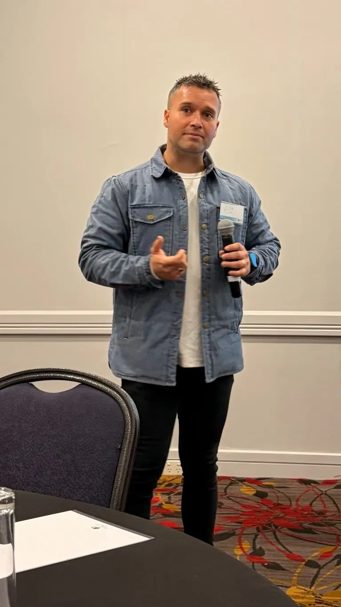
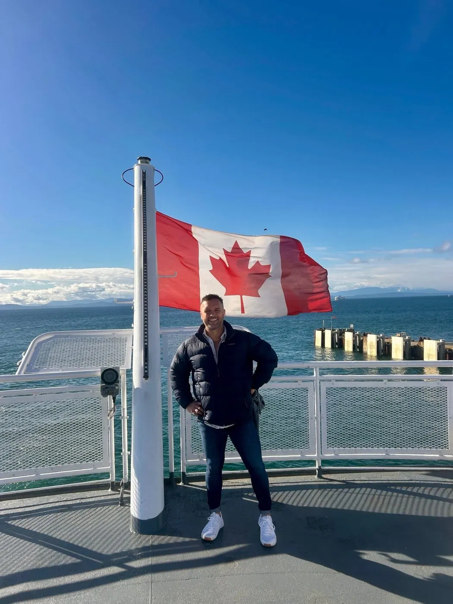

Built on lived experience and cultural knowledge
I-SPOT exists because the people who understand a crisis best are the people who've lived through one, and the communities who carry the knowledge to prevent it.
Training that starts from community, not a manual
Connection Works was founded to bring trauma-informed, culturally grounded practice into spaces that badly needed it: health services, schools, government and community organisations. I-SPOT grew out of that work, from a recognition that most suicide-prevention training was designed without Aboriginal and Torres Strait Islander communities in the room, and that gap was costing lives.
What began as a single workshop has grown into a full training suite, delivered face-to-face and online, for community members, frontline workers and organisations across Australia, with a strong focus on Central Australia, and now extending to First Nations communities in Canada and Aotearoa New Zealand.
We work through a cultural lens that centres Indigenous sovereignty, leadership and lived experience. Our programs aren't mainstream approaches adapted after the fact. They're built from the ground up with Indigenous authority embedded in their structure, values and purpose, shaped by community voice and cultural advisory processes at every stage.
Our vision
A world where individuals are met with dignity, cultural respect, and connection in times of crisis.
Our mission
To create safer systems and stronger communities through culturally led education and training.

A proud Kamilaroi man, building the training he wished existed
I-SPOT was founded by Eli Toombs, a proud Kamilaroi man, facilitator, trainer and consultant. Eli holds an MBA and brings a background in trauma-informed practice and depth psychology to every program Connection Works delivers, combining cultural knowledge with rigorous, evidence-based facilitation.
Connection Works was founded, in part, through Eli's own lived experience of suicide. That journey has shaped the values, purpose and direction of our work, and informs our belief that lived experience isn't just valuable: it's essential to designing programs that are real, relevant and culturally safe.
Eli and the Connection Works team were recognised with a Highly Commended Award in the Priority Populations category at the 2026 Suicide Prevention LiFe Awards, for I-SPOT's contribution to culturally safe suicide prevention.
Get in touch with Eli and the teamOur values
Connection
Strengthening relationships between individuals, families, communities and culture as a protective factor against suicide.
Cultural leadership
Indigenous-owned, Indigenous-designed and Indigenous-led, with cultural authority centred at every stage.
Collective healing
Guided by the Social and Emotional Wellbeing framework, recognising intergenerational trauma and leaning into the strengths of culture and community.
Adaptability
Designed for flexible delivery, including outreach, online and hybrid formats, to reach diverse locations and learning needs.
Empowerment through education
Giving participants clear, teachable skills they can apply immediately in community settings.
Our goals
Expand access
Grow culturally safe suicide prevention and intervention training across Australia and New Zealand through scalable, flexible program formats.
Embed cultural safety
Integrate Indigenous knowledge and cultural advisory at every stage of program design and delivery.
Build connection-based skills
Teach participants to recognise and respond to signs of suicide within a relational, culturally safe framework.
Lead by example
Model best practice as an Indigenous-led organisation through cultural leadership, continuous improvement and sector advocacy.

Delivering culturally safe training across three countries
- Australia
Nationwide, with a focus on Central Australia
Our home base: working closely with community organisations, ACCHOs and government partners, with deep experience delivering in Central Australia.
- Canada
Partnering with First Nations communities
Training adapted for First Nations youth and communities, including train-the-trainer partnerships that build lasting local capacity.
- Aotearoa New Zealand
Extending a shared kaupapa
Bringing I-SPOT's cultural safety framework into partnership with Māori communities and organisations.
Want to know more about how I-SPOT is delivered?
We're happy to talk through our approach, our facilitators and which program would suit your people.
- Response time
- Within two business days
- Delivering in
- Australia, Canada and Aotearoa New Zealand